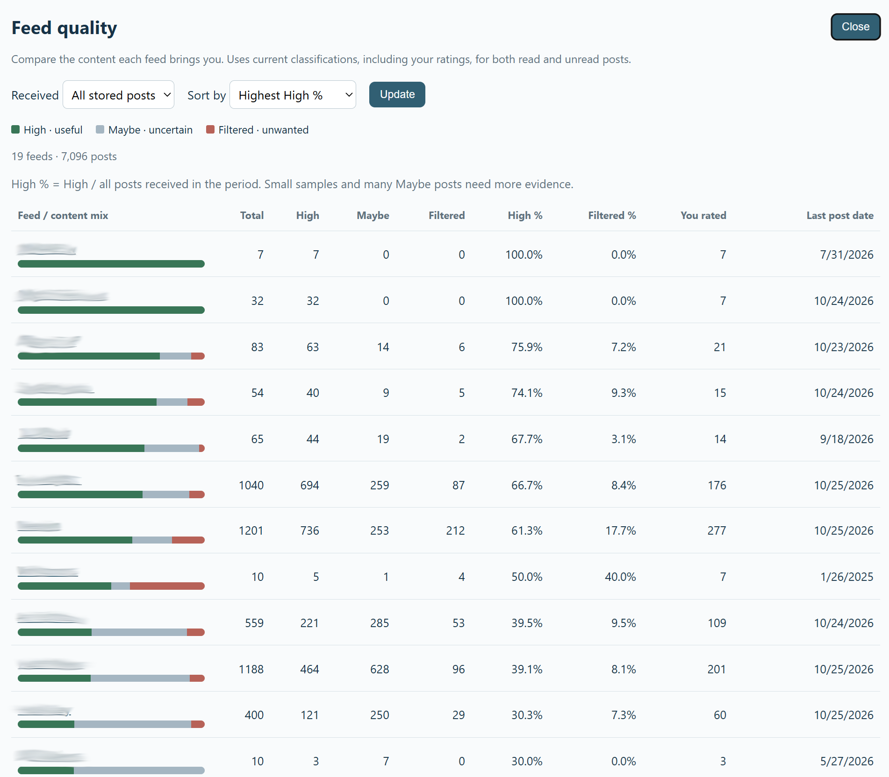

I built PersonalRSS to keep following busy feeds without having to sift through every post. It brings RSS and Atom subscriptions into one private reader and learns which stories I want to see more often.
View on GitHub
From daily reading to better feeds
Teach it as you read. Mark a story as Interested or Not interested. PersonalRSS brings likely matches into High, keeps uncertain stories in Maybe, and lets you review or correct anything it puts in Filtered.
Keep control of the filter. You can inspect why a post was ranked, override individual decisions, or set rules for topics you always want to see or skip. The preference model runs locally, with an optional second opinion from an LM Studio model.
See which subscriptions earn their place. Feed Quality shows each feed’s mix of High, Maybe, and Filtered posts over 30 days, 90 days, or the full archive. You can also publish the filtered results as RSS and read them in another reader.

